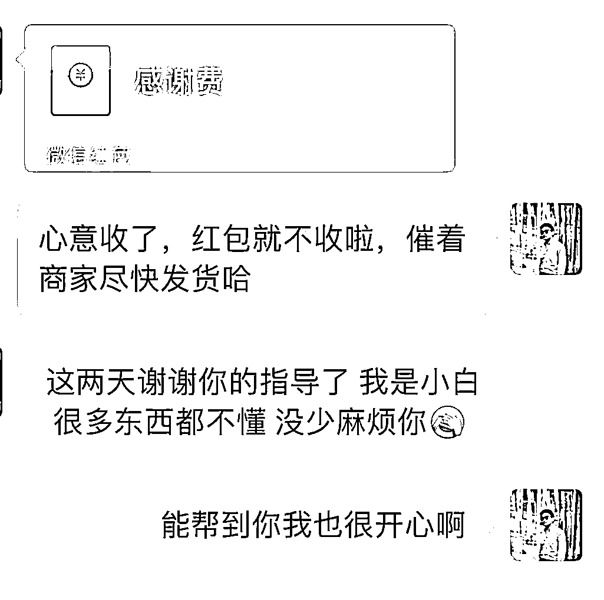
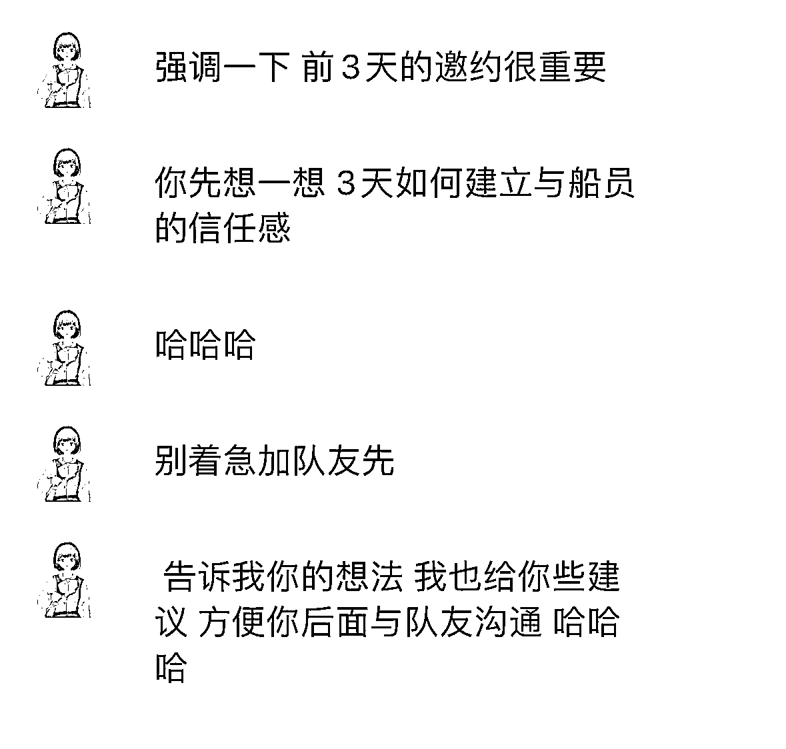
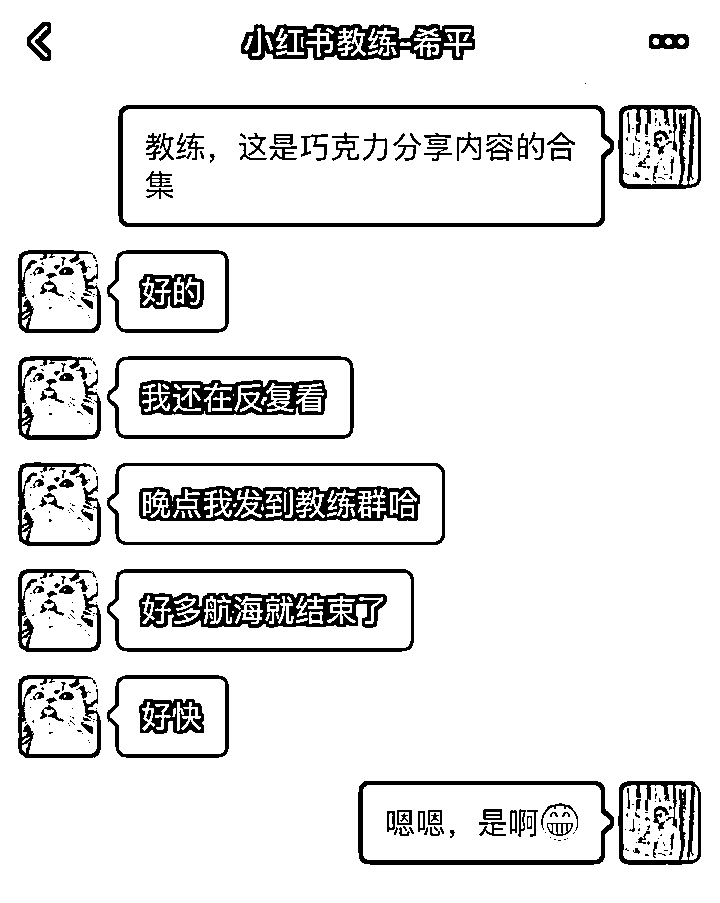

来源：https://ns5rksxk57.feishu.cn/docx/JZQVd1CfbouI6RxBDeycdZnPnlr
大家好，我是浅凡，曾经是头部房企的地产人，虽人到中年，但对未知充满兴趣，信奉人生在于不断折腾。幸好有生财，依托于在生财学习到的技能，目前在家居装修行业，搞流量，做老板IP。
在生财，我的身份是一名资深的志愿者了。参加了15次+航海，做了4次志愿者，1次领队。在“志愿者线下聚会”分享等经历。在12月航海即将起航之际，我看到新一轮的志愿者招募开始了。如果你对“志愿者”这个角色感兴趣，或者有些困惑，来看看我的经历吧，希望对你有启发。
希望新加入的志愿者，以及还在犹豫的圈友看完这篇文章，你能感受到：
“志愿者原来可以这么玩，我也要来试一试”
废话不多说，接下来我从4个方面来聊聊我做志愿者和领队的心路历程。
在生财不做一次志愿者，人生是不完整的。
我记得当大航海船员的时候，看了到了一篇志愿者写的帖子，他写了很多自己当志愿者的收获，尤其是这一句话，我印象深刻，但是当时我在心里也打鼓，这个工作又出力，又不给钱，有他说的这么夸张吗？
每次航海的时候，我就在想要不要试试，但还是少了些勇气，随即就放弃了，继续当船员。
后来在参加公众号续航时，我认识了志愿者-马可乐。她做志愿者的方式，让我眼前一亮，原来志愿者可以这么有趣，这么有温度。这不是一个机械枯燥的工作。
在她的鼓励下，我加入了“志愿者”的队伍，心想自己也要像她一样，做一个有温度得志愿者。
2023年12月第一次做视频号IP带货的志愿者，我进入了：“一看就会，一学就废”的陷阱，看别人做的时候觉得挺简单的，但自己真正做的时候，还有很多需要学习。这一次，上岸率78.79%。低于平均水平。
但在接下来的3次航海中，上岸率均在90%以上，不但拿到了优秀志愿者，还在7月份的航海中 拿到了小组第一名，船员老杨更是荣获个人第一。
我记得自己第一次申请当志愿者的时候就填了下面这些理由
1️⃣ 我要学习社群运营怎么玩。
2️⃣ 认识人，认识更牛的人，涨见识、交朋友。
3️⃣ 重整朋友圈。
没想到是， 当初申请的理由，现在都一一实现了，我学会了如何做一个付费类社群的运营，如何循序渐进引导用户，获得他想要的东西。
在志愿者的队伍里，卧虎藏龙的大佬太多，有了更多的机会结交优秀的圈友，不断突破自己的局限，刷新自己的认知。
关于重整朋友圈，当时在线下分享的时候，大家就满脸问号❓，其实在加入志愿者之前，我的朋友圈几乎都是曾经地产行业的人，所以每天都是各类的房产信息。现在每天刷到的都是圈友们，如何搞钱、如何提升自己的“鸡汤”。
1️⃣ 用自己的经验去帮助愿意让你帮助的人，在圈友中建立一点点影响力。
2️⃣ 链接更多优秀的圈友，早日加入大佬队伍。
3️⃣ 通过生财的体系，让自己拥有一家小而美的公司。
亦仁说：怕什么时间不够，进一寸有一寸的欢喜。我也会慢慢来，让自己每天都有一寸的进步，一寸的欢喜。
亦仁8.21在帖子《新志愿者成长体系即将公布》中透露，“为了让我们的志愿者们可以得到更多的成长和发展，本期航海开始，迭代了全新的志愿者成长体系”。
9月份航海果断申请领队资格，最终随了我的愿。
还有一些理由：
祛魅：
成长， 就是一次次祛魅的过程。
好像很难，但也没那么难：
想，都很难，做反而容易了。
离核心越近，获取信息更便捷：
都说赚钱就是信息差，那么想要缩小差距，就尽量靠近核心。
能当领队的，都有两把刷子，我要跟他们一起玩
和优秀的人一起玩，哪怕你就在旁边看着，都能收获满两个口袋。
这部分内容在之前的帖子： 中也有详细的介绍，以下再次腾挪过来（局部有修改）：
天下武功唯快不破，但想有一把快刀，就需要慢工出细活，慢慢把刀磨锋利了，才能所向披靡。
天下武功，唯快不破：
在志愿者的江湖里，快速响应是必备技能。但别忘了，一把锋利的刀，需要时间来磨。咱们要像武林高手一样，慢慢来，一步一个脚印，把需要做的工作做到极致。
慢工出细活：
成为优秀志愿者的路上，耐心和细致是咱们的内功心法。每一次服务，每一次帮助，需要我们要用心去做，把温暖和关怀传递给每一位船员。
磨刀不误砍柴工：
别急着求成，慢下来，把每一次的沟通、每一次的解答都当作是磨刀石，让自己的“刀法”越来越锋利，越来越精准。
所向披靡的秘诀：
当你的内功深厚，刀法锋利，那时候，无论是解答疑惑，还是提供帮助，你都能所向披靡，成为志愿者中的佼佼者。
成为优秀志愿者的第一大秘籍——以诚相待，真心沟通。在我看来，这不仅是个技巧，更是一种态度。
做志愿者，每次的航海需要和30多个船员沟通，想必你也会有这样的疑问：
30多个人要一对一沟通能忙的过来吗？
会不会和你的工作冲突？
他们不理你怎么办？
他们不配合你怎么办？
他们没上岸，拿不回保证金会不会怪你？
~~~
以上的问题，我想当你成为志愿者的圈友都应该或多或少的会有这样的疑惑吧
一对一沟通，忙得过来吗？
做志愿者，就像是开了个“心灵诊所”，要和30多个船员一一“问诊”。
你可能会想：“这么多人，我忙得过来吗？”
告诉你，只要你有真心，沟通就不再是负担，而是享受。
工作冲突，怎么办？
担心和工作冲突？别怕，把志愿者工作当作是打怪升级，合理安排时间，你会发现，这两者可以相辅相成。
他们不理你，怎么办？
如果他们不理你，别灰心。记住，真心就像一杯热茶，温暖人心，早晚会融化冰雪。寻求往期优秀志愿者们复盘、遇到困惑找领队、多到志愿者群里大胆的发声寻求优秀队友们的分享
不配合，怎么办？
遇到不配合的船员，别急。先换位思考，允许暂时不理你的队友们，也许是真的遇到了什么一些不可抗拒的理由，用你的真诚去感染他们，让他们感受到你的用心，后面回复的时候彼此做好约定。
没上岸，怪你怎么办？
如果他们没上岸，担心会怪你？放宽心，每个人的时间都很宝贵，互相尊重，只要你真心付出了，问心无愧。
综上所述其实我的解法很简单：
真心，才是最要紧的，要用一颗心来真诚的对待和服务每一位船员。
每一位参加航海的圈友目标是搞钱，能够参与到航海实战中的都是一个个充满活力，不是冰冷的昵称、代码或符号。相信自己，你在做的任何一件事，屏幕后面的每一位都能感知到你是否真心在帮他。

生财运营团队——SOP在手：
在咱们生财强大的运营团队支持下，每期都会提供详细的SOP。从邀约船员上船到航行的过程，你可以辅助用你自己的方式，根据船员的性格差异不同，进行多方面的沟通。
领队马可乐说——磨刀不误砍柴工：
我在领队马可乐那里学到的最重要的一课就是：磨刀不误砍柴工。用真心去沟通，用真诚去服务，你会发现，每一位船员都是你成长路上的宝贵财富。

领队马可乐真的是手把手教，这样的小灶太多了，我也学会了不急不躁，慢慢来，慢慢与大家建立信任。
我会根据官方的 SOP和领队的小手册，制定一个适合自己操作的流程
感兴趣的圈友可以移步查看 。

做领队的时候，结合自己和其他优秀志愿者的经验，整理自己小组的小手册，把志愿者如何邀约上船，如何与船员建立深度沟通，详细罗列，让志愿者对照操作。
在添加船员的微信后，邀约上船前，这个期间是非常重要的
如果这里做好了，在整个航海中将事半功倍，与船员的沟通也会丝滑无比，大概率不会出现上面我提到的问题。
关于提高沟通效率方面，我尝试过3种方法，根据和船员的沟通节奏，提醒自己避免遗漏。
第一、建立飞书文档，把问题罗列好，切换查看。电脑上操作比较便利，沟通的效率也最高。
第二、把相关问题，记录在手机备忘录里面，提醒自己。后因切换不便，此方法被我 pass。
第三、在微信建立一个只有自己的群，按照我习惯的沟通频率，把问题分别发进群，同时在航海的过程中也可以把重要的提醒发进群里，再转发给船员，非常丝滑。
上面的三种方法，经过多次的测试，第三种的效率最高，我的群名就叫做航海SOP，并在微信中置顶。
根据提前设置好的问题，用心的慢慢和每一位船员去聊天，尽可能的了解他们，引导他们在本次航行中自己想要获得的目标【哪怕是开1单，赚1块钱】你和他就有了链接，有了共同的目标。
这次的航海是28的长途航海，有一些船员是第一次参加航海，同时本次的保证金为1999元，为了保证大家的体验，更没有后顾之忧，我在和每位船员进行沟通的时候都会询问对方，是否了解本次航海的规则，打卡的要求以及是否需要打卡提醒等等（哈哈哈 虽然这次的航海是对我们志愿者提出了不需要去做提醒船员们的打卡要求）

当然也会有一些自律性特别好的圈友不需要提醒，毕竟赚钱的事情自己要为自己负责嘛。
和船员约定好一些注意事项后，接着就是邀请大家进【航海项目实战群】，这里还有一个秘籍。
首先添加船员的时候，我会给每个人的备注加上便签。如下图：

这样的标记，不会和任何昵称冲突，只要你想找船员的时候只需要总搜索栏搜索标签即可，在线下分享的时候，我问大家，能否猜出来“SPHKB”是什么意思，大家都摇摇头。实际上就是“视频号口播”的首字母缩小😄
这里面我还藏了一个彩蛋，不知道大家能否猜到😊
没错，有的昵称后面有一个📺，这个Emoji 表情，我是用来标记第一次参加航海的圈友，是不是很可爱，哈哈哈
加上了以上的标签后，就是需要把大家邀请进两个大群。
我目前的做法是，每一位船员沟通完后，会告知对方，在航海开始前我会统一邀请大家上船，不用着急，现在可以先看看我给你准备的相关资料。
统一邀请的好处就是，你的船员在大群里面基本都是集中的，方便领队下达需要通知船员们完成的事项，更容易找到，并告知提醒圈友。哈哈哈，好处不止在此试试你就知道了。
根据上面的截图，大家应该一眼都能看到，我的船员都集中在了这一屏内，强迫症犯了，哈哈
以上的秘籍是我在一年多的磨砺锻炼中的一些经验总结，想做一个优秀的志愿者，必备的技能。
也让我和船员沟通的更加顺畅，关系更加密切，有一种当老大的感觉，全国各地都有自己的兄弟姐妹，哈哈。
当了领队，我就在想肯定是和志愿者不一样了，自己要怎么玩，才能让和我一起并肩作战的志愿者有收获。
1、与志愿者有什么区别
2、当成公司去运营
3、心态与方法的调整
A：从一个单纯的执行者升级为需要思考的运营者
B：服务30多人到300多人
C：承上启下发掘更优秀的人
最大的区别就是身份的转变。
我记得我在工作的时候，自己作为一个售楼员，看着领导，天天晚上开会，我们还要等着他开完会，再下达相应的任务要求。那时候就会和同事吐槽，天天哪有那么多事情要开会，我要是当了负责人，肯定不会这么做。
后来就打脸了，当我做到了项目负责人后，理解了，为什么领导的会多，为什么会那么做。
我更想说的是，屁股决定脑袋，你不做这个岗位，不去尝试，永远也理解不了为什么要这么做。
A：把志愿者当自己的合伙人
B：立规矩、定流程、设目标
C：根据每个人的情况，下达任务进行沟通
我的盖洛普完美排在前十，较既然要做，就要做好。
当然，在具体做领队的时候，我也遇到了很多问题，我属于高敏感群体中的一员，所以更多的时候是在调整自己的心态。
做自媒体，我们都知道要要以用户的需求去创作内容，同时出现了问题，请教用户肯定是最快的反馈。

在此非常感谢我们团队的每一个志愿者，谢谢你们的信任和支持（排名不分先后）
@城锦@茉尔@敬瑶@泳仪@琳玉@leon@阿香@椰椰@不言@竹子@火火
心态OK了，也需要方法上的调整。每周一三五都有教练点评，后来发现只有自己日志被点评的船员和极少积极的船员才会关注，与教练商量调整了策略，改为优秀船员的分享。
当然，在做之前是和咱们的运营提前申请过的。


通过和志愿者沟通，其中有两名船员@巧克力@方芳拿到了结果，同时也愿意做分享，随即就拉了小群，开始讨论分享的内容和时间。@巧克力在航海结束的时候，把分享的内容发布到了星球，不仅拿到了精华也拿到了亦仁的点赞。

航海结束和一位志愿者在聊天，也算是帮他做个复盘，他说我发的小手册很有用，而且还看了好多遍，帮助很大。
我就觉得值了，没有白白熬夜去整理。
最后，我想了很久，我想下面这三句话，是我在做志愿者的时候用来时常提醒自己的，希望对你有用。
1、珍惜每一次做志愿者的机会，也许以后你会用到
2、把握每一次和圈友沟通的机会，很多大佬，很低调
3、提升自己，直面自己，修身养性
最后的最后，我要感谢很多人，是你们让我在生财这个大社群中一步一步成长。
@梁梦吟@常常@马可乐@欢欢@萌虎@雪雪@沧海@胖虎@池姐 @柳大 @甘振有 @范磊 @小乐 @奶昔@叁斤 @kim树圆@大响 @徐宝藏 @翔叔 @钱剑波 @無常@怡成 @咕咕 @积木淘 @杜阿寻 @胡杨 ......（排名不分先后）
感谢以上的伙伴对我的帮助，还有很多朋友没有罗列出来，感谢大家。
不要犹豫，加入生财的航海，成为志愿者，和我一起在这片海洋中乘风破浪。
你将可能学习到：